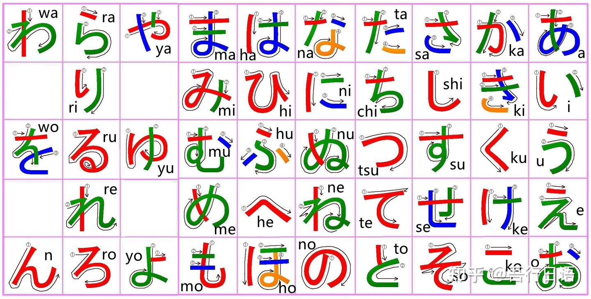
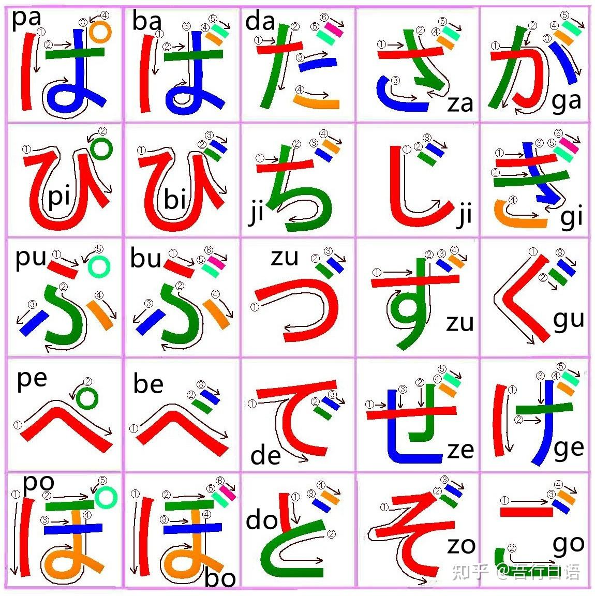
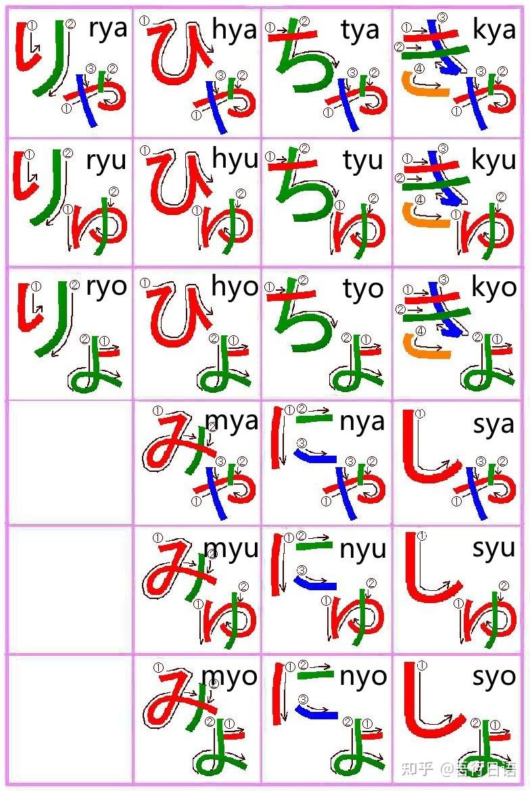

平假名

注意：引用的图片中仅对现代假名进行了展示
在上世纪四五十年代之前日语中还存在着ゐ（wi）、ゑ（we）这两个假名（对应片假名分别为ヰ、ヱ），二战时期左右停用
片假名

片假名主要用于对外来语的引用、对被强调语段的标记等用途，主要语感就是代表着表强调的引用
浊音与半浊音
可能有的学习者在学习时想用日语发现了这样一个问题：
自己的名字中含有带“b、z、d、g”等辅音（汉语中不送气音对应日语浊音），从而无法用基础假名拼写，那自己的名字还有没有办法用日语表示呢？
——有的！这就要引入一个新的概念浊音
我们通过在部分假名的右上角加两个类似顿点的标记来标记浊音
加浊音后辅音的变化：
- k⇒g
- s⇒z
- t⇒d
- h⇒b
细心的读者会发现：欸？为什么“h”的浊音是“b”，那“p”呢？
这就引出了日语中的半浊音：
“h”的半浊音就是“p”
其标记方式就是在は行（は、ひ、ふ、へ、ほ）右上角划上一个类似于句号的小圈

拗音
日语是一个音节极致简约，而语法很规律严谨的语言。
尽管如此，无论如何，46个基本音（平片假名为一套发音体系）对于一个没有音调的语言来说实在是太少了...
所以在日语中存在一种可以将两个音“协调”地拼接在一起的方式——拗音
拗音的拼接条件：
- 前一个假名为有辅音的（非あ、い、う、え、お）且以i为元音的假名
- 后一个假名为以y为辅音的や、ゆ、よ
这两条规则乍一看可能会令人有些不解，但倘若我们能够明白拗音的本质，理解这两条规则就变得自然而然了
你可以将拗音看作我们熟悉的汉语拼音中，那些中间有一个i作为过渡辅音的音节（bie nie qia...）因此，前音元音和后音辅音都一致为i（j）
更加专业的说法是：拗音即是硬颚化辅音与基础元音的音节组合（理不理解不重要）
需要强调的一点是：现代日语中拗音第二个假名必须小写！！！
